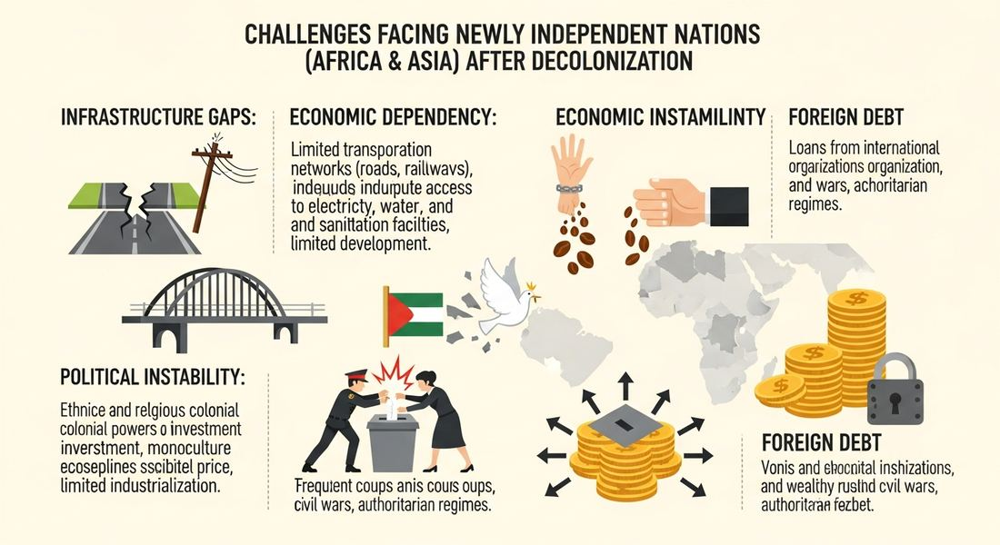

8.6 Newly Independent States
- LO-A: New borders = new conflicts and population movements: The redrawing of political boundaries at decolonization created new states (Israel, Pakistan, Cambodia) but also triggered conflicts and massive population displacement, including the Partition of India (12–20 million displaced) and the Arab-Israeli conflict. Newly independent governments took strong economic roles: Without functioning private sectors and facing enormous development needs, governments in newly independent states typically took a strong role in guiding economic development, from Nasser's nationalization in Egypt to Nyerere's ujamaa socialism in Tanzania. Know the four CED examples: Nasser (Egypt), Indira Gandhi (India), Julius Nyerere (Tanzania), Sirimavo Bandaranaike (Sri Lanka). Migration maintained ties between colony and metropole: Former colonial subjects migrated to the imperial metropoles (Britain, France, US) for economic opportunity. South Asians to Britain, Algerians to France, Filipinos to the US, all CED examples. These migrations maintained cultural and economic ties even after political independence. Two LOs, three themes: LO G = territorial/demographic consequences of boundary redrawing. LO H = economic policies + migration. Know all CED illustrative examples for both.
Try each question before revealing the answer.
1. Why did many newly independent governments take a strong role in guiding the economy rather than relying on free markets?
2. Why is it historically interesting that Sirimavo Bandaranaike (Sri Lanka) was the world's first female prime minister (1960)?
3. How did migration from former colonies to the imperial "metropole" create a new kind of connection between countries after independence?
- Explain the political, economic, and demographic challenges newly independent states faced after decolonization, including territorial disputes and population displacement from border redrawing, state-led economic development strategies, and migration to former colonial metropoles
Tap a term for its definition.
-
Definition: Division of British India into two independent states: Hindu-majority India and Muslim-majority Pakistan, triggering massive population displacement and communal violence. Significance: CED example of boundary redrawing leading to population displacement; 12–20 million displaced, up to 2 million killed in communal violence.
-
Definition: The UN partition plan for Palestine led to the establishment of the State of Israel in 1948; Arab states immediately went to war, creating the Palestinian refugee crisis. Significance: CED illustrative example of a state created by redrawing political boundaries; the Israeli-Palestinian conflict remains unresolved, illustrating the long-term consequences of post-colonial boundary decisions.
-
Definition: First president of Tanzania (1964–1985); pioneer of African socialism ("ujamaa"), collective farming and self-reliance as development strategy. Significance: CED illustrative example of governments guiding economic life; his ujamaa village program was an ambitious attempt at African-path development that ultimately struggled economically.
-
Definition: Prime minister of India (1966–77, 1980–84); implemented state-directed economic policies including nationalization of banks, import substitution industrialization, and the "Green Revolution" in agriculture. Significance: CED illustrative example; India's approach, non-aligned politically, state-directed economically, shaped development theory for many newly independent nations.
-
Definition: Julius Nyerere's policy of African socialism, collective farming villages, state-owned enterprises, and emphasis on self-reliance rather than foreign dependency. From Swahili meaning "familyhood." Significance: One of the most ambitious attempts to develop an African-path alternative to both capitalism and Soviet communism; faced significant economic difficulties by the 1970s.
-
Definition: First female prime minister in world history (Sri Lanka, 1960); implemented nationalization of foreign businesses and social welfare programs. Significance: CED illustrative example of post-independence economic policy; also historically significant as the world's first woman to serve as head of government.
-
Definition: Economic strategy in which newly independent states replaced foreign imports with domestically produced goods by establishing state-owned industries behind tariff walls. Significance: Dominant development strategy in newly independent states of Asia, Africa, and Latin America in the 1950s–70s; initially successful in building industry but often inefficient without market competition.
-
Definition: Money sent by migrants to family members in their home countries. Significance: One of the primary economic connections between former colonies (sending countries) and metropoles (receiving countries) maintained through post-colonial migration; in some countries, remittances are a larger source of income than exports or foreign aid.
🗺️ New States, New Conflicts: Boundary Redrawing, KC-6.2.III.A
Decolonization created a world of new states. But creating those states required redrawing political boundaries, and boundary redrawing had profound and often devastating consequences. The CED identifies three states created by the redrawing of political boundaries: Israel, Cambodia, and Pakistan.
Israel (1948): Britain held a "mandate" over Palestine after WWI, given by the League of Nations to administer the former Ottoman territory. Jewish immigration to Palestine had increased dramatically in the 1920s–40s, particularly as Jews fled Nazi persecution in Europe. After WWII, the UN proposed a partition plan dividing Palestine between Jewish and Arab states. The Zionist leadership accepted it and declared the State of Israel in May 1948. Arab states immediately went to war; Israel survived and expanded its territory. Approximately 700,000 Palestinian Arabs fled or were expelled, the Nakba ("catastrophe" in Arabic). The conflict over the territory of the former British Mandate of Palestine has continued to the present day.
Pakistan (1947): British India was partitioned into two new states: Hindu-majority India and Muslim-majority Pakistan. Pakistan was itself geographically divided. East Pakistan (which became Bangladesh in 1971) and West Pakistan separated by 1,000 miles of Indian territory. The partition created one of the largest forced migrations in history: approximately 12–20 million Hindus, Muslims, and Sikhs moved across the new borders, accompanied by communal massacres that killed hundreds of thousands to possibly 2 million people.
Cambodia (1953): Cambodia was part of French Indochina; it achieved independence from France in 1953 under King Norodom Sihanouk. The new state's boundaries reflected the colonial-era borders drawn by France, which placed ethnic Khmer populations primarily within Cambodia but left Khmer minorities in Vietnam and Thailand. Cambodia's post-independence history was shaped by the Vietnam War and Cold War competition, leading ultimately to the genocidal Khmer Rouge regime (1975–79).

Image credit not specified.
AI-generated illustration (Google Gemini, 2025), commercially licensed.
💼 Governments Guide Economic Life, KC-6.3.I.C
The CED states that "in newly independent states after World War II, governments often took on a strong role in guiding economic life to promote development." This is one of the defining economic patterns of the decolonization era. Know the four required illustrative examples:
Gamal Abdel Nasser's economic development in Egypt: Nasser nationalized the Suez Canal (1956) and used its revenues for development, including the Aswan High Dam, which transformed Egyptian agriculture by controlling the Nile's floods. He also nationalized major industries and implemented land redistribution. Nasser's approach was called "Arab Socialism", state ownership of key industries combined with social programs. The Aswan Dam itself, financed by the USSR after the US withdrew support, became a symbol of state-led development using superpower Cold War competition to Egypt's advantage.
Indira Gandhi's economic policies in India: As India's prime minister from 1966, Gandhi implemented a strongly state-directed economic model: nationalization of 14 major banks (1969), heavy industry investment, import substitution, and poverty reduction programs. She also oversaw the "Green Revolution", introduction of high-yield wheat and rice varieties that transformed Indian agriculture and enabled India to become food self-sufficient. India's non-aligned foreign policy was matched by an economic policy that resisted both US-style free markets and Soviet-style complete planning.
Julius Nyerere's modernization in Tanzania: Nyerere, Tanzania's first president, developed an ideology called ujamaa (Swahili: "familyhood"). African socialism based on collective village farming, state ownership of industry, and self-reliance rather than foreign investment. The Arusha Declaration (1967) committed Tanzania to these principles. The ujamaa village program relocated millions of Tanzanians into collective farming villages. While Nyerere's commitment to education and healthcare was remarkable, Tanzania's literacy rate rose from 15% to over 85% during his tenure, the economic results were mixed, and Tanzania remained among the world's poorest countries.
Sirimavo Bandaranaike's economic policies in Sri Lanka: The world's first female prime minister nationalized foreign-owned businesses, implemented land reform, and expanded social welfare programs. Her governments took a strongly statist approach to development, taking over the Ceylon Transport Board, nationalizing oil companies, and expanding state-owned enterprises. Sri Lanka's path illustrated both the promise and the challenges of state-led development: strong social indicators (high literacy, long life expectancy) but slow economic growth.
✈️ Migration to the Former Metropole, KC-6.2.III.B
The CED identifies a key continuity across the formal end of empire: "The migration of former colonial subjects to imperial metropoles, usually in the major cities, maintained cultural and economic ties between the colony and the metropole even after the dissolution of empires." Three required illustrative examples:
South Asians to Britain: After Indian independence (1947), South Asians, from India, Pakistan, and later Bangladesh, migrated to Britain in significant numbers, especially after the 1948 British Nationality Act confirmed the right of Commonwealth citizens to live and work in Britain. They settled primarily in industrial cities: Birmingham, Bradford, Leicester, London. By the 1960s, South Asian communities were significant in British life. Their presence transformed British culture (curry became Britain's "national dish"), created ongoing economic and cultural ties with South Asia, and also generated significant social tensions that led to immigration restrictions in the 1960s–70s.
Algerians to France: Algeria's proximity to France and the historical connections of French rule meant that Algerian workers had been migrating to France since the early 20th century. After independence (1962), migration continued. France needed labor for its postwar economic boom; Algerians needed economic opportunity. Algerian communities in Paris, Lyon, and Marseille maintained strong cultural connections to Algeria while also becoming permanent residents of France. This Algerian-French community, sometimes called the Beur generation (children of Algerian immigrants born in France), represents a living legacy of colonialism in contemporary France.
Filipinos to the United States: The Philippines had been a US territory (1898–1946), which created deep structural ties: English as an official language, US-style education systems, and already-established migration patterns. After formal independence (1946), Filipinos continued to migrate to the US, initially as agricultural workers in Hawaii and California, later as professionals (especially nurses and healthcare workers). Today, approximately 4 million Filipinos live in the US; remittances from the Filipino diaspora represent one of the most significant sources of income for the Philippine economy.
These videos will help you review Newly Independent States and solidify key concepts before your exam.
- That religious differences always make shared statehood impossible
- That boundary decisions made by colonial or international powers without adequate consideration of local communities could trigger devastating conflicts and humanitarian crises
- That newly independent states were inevitably unstable because their populations lacked experience with self-governance
- That the Cold War superpowers deliberately created conflicts in newly independent states to maintain influence
- Successfully transformed Tanzania into an industrialized economy within one generation
- Demonstrated that communist economic models were more successful in Africa than Western capitalist approaches
- Represented an attempt to develop a distinctly African alternative to both Western capitalism and Soviet communism, emphasizing collective farming and self-reliance
- Attracted significant foreign investment by guaranteeing property rights and open markets
- Colonial rule had created structural connections, shared languages, familiar institutions, established travel routes, and economic disparities, that directed migration flows from former colonies to the metropole even after political independence
- Formal agreements between newly independent states and their former colonial powers required labor migration as part of independence settlements
- The Cold War superpowers encouraged migration from developing nations to prevent communist organizing in newly independent states
- Newly independent governments sent citizens abroad to earn remittances as their primary economic development strategy
- Both were motivated primarily by Cold War alignment with the Soviet Union
- Both were endorsed by the International Monetary Fund as models for developing nations
- Both ultimately failed and were reversed within a decade
- Both involved state takeover of key economic resources to assert national sovereignty and direct development, using government control of capital and infrastructure to reduce foreign economic influence
- Her economic policies became a model adopted by most newly independent states in South Asia
- She successfully negotiated Sri Lanka's independence from Britain through a unique constitutional compromise
- She was the world's first female prime minister (1960), demonstrating that decolonization could open new political possibilities for women in post-colonial societies
- Her foreign policy successfully prevented Cold War superpower intervention in Sri Lankan affairs